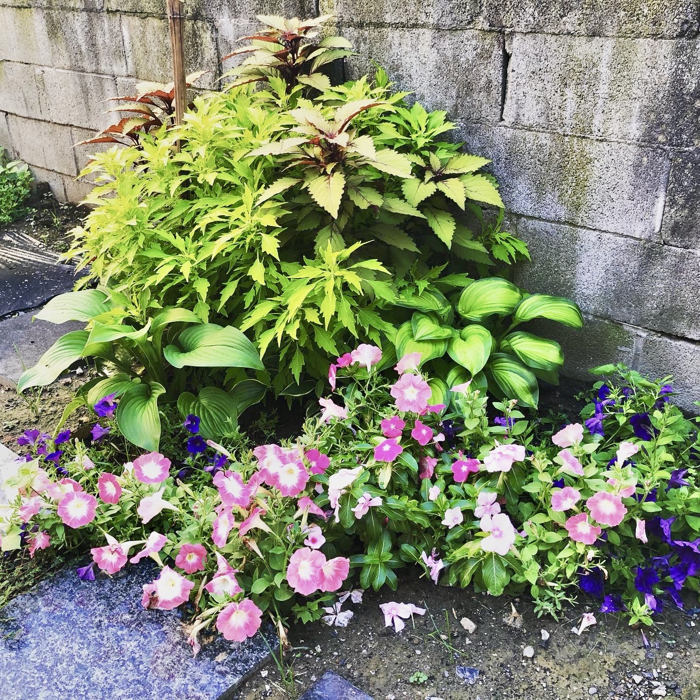
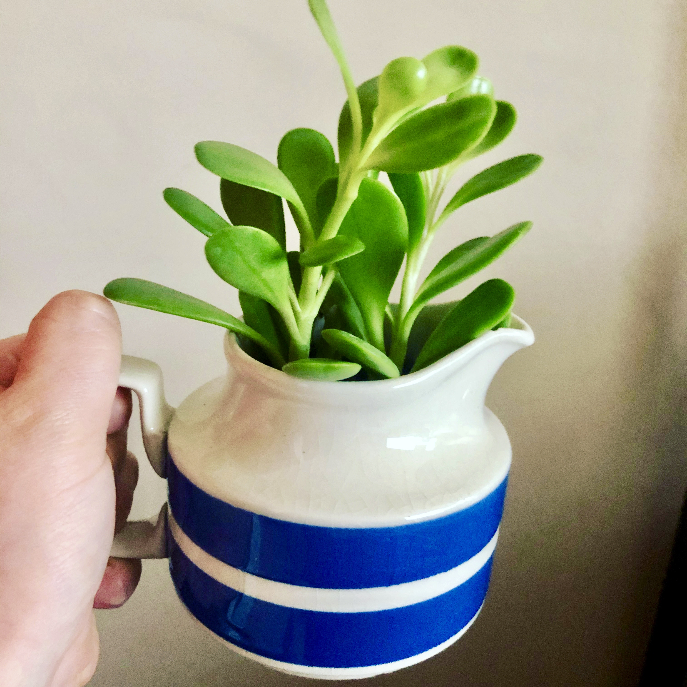
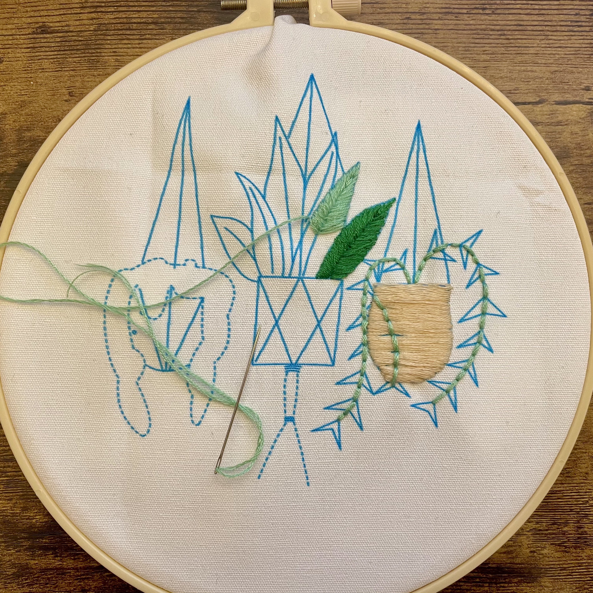

Hi, I'm Jamie
I grow teams, products, and plants. 🪴
I'm a plant-based product manager who likes to tinker. I'm obsessed with the future of food, cities, and communities. My whole life, I've been fortunate enough to do work that feels meaningful and impactful — first as an
educator, now working on products that seek to improve the way we live (such as making health insurance easier to use).
Before I was a product manager, I was a teacher. My experience as a teacher shaped how I excel at some of the most challenging parts of product management — managing stakeholders, and influencing without authority.
It also made me extremely empathetic — I talk about my users like they're my friends; I understand their challenges because I put myself in their shoes and ask them what they need.
What I'm Growing at Work
Projects at Oscar Health
- Developing a best-in-class insurance enrollment and administration tool for brokers and small groups
- Managing partner integrations
- Supporting a major internal service development and migration
- Shipping early and often
What I'm Growing at Home
Outdoor Garden
Indoor Garden
Craft Garden
What I'm Reading
- Braiding Sweetgrass
- All We Can Save
- Tiny Victory Gardens
- Up next from my local bookshop